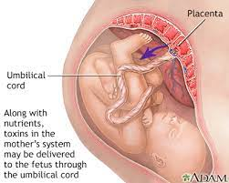

Substance abuse when pregnant!
Women stuck in substance abuse have bigger issues to be concerned with when they become pregnant. Not only are they responsible for their life, but also how their baby will start life.

When women are in active addiction find out they are pregnant, They have some important decisions to make.
- Do they want their baby to be born with the difficulties of detox?
- How to detox safely? It can be dangerous for baby and mother to detox to quickly.
- What would be a safe option if detox is not an option?
To start your journey first thing you need to decide are you ready to give up substances for your child , unborn or born. Being sober and a new parent is very dificult, but there is plenty of help for new parents that deal with substance addiction.
Learn More